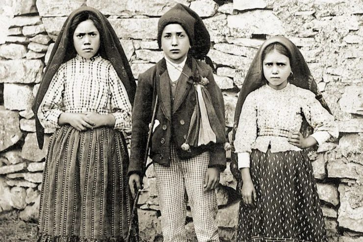
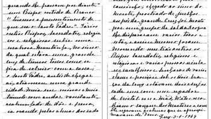
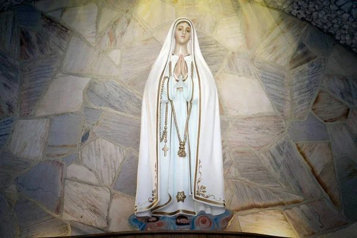
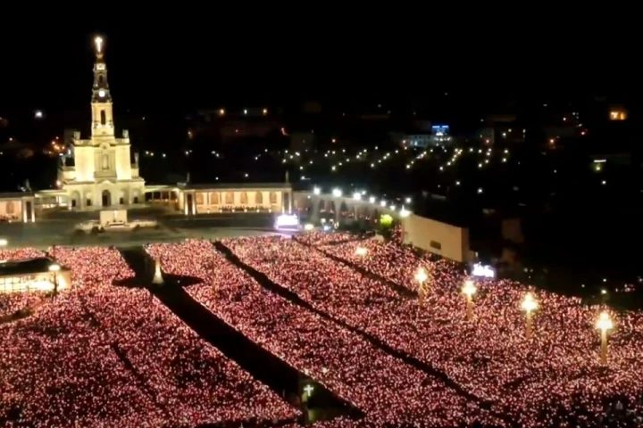

Historia y Origen

En la primavera de 1917, mientras Europa ardía en la Primera Guerra Mundial y la Revolución Bolchevique amenazaba con transformar el orden mundial, tres niños pastores de la aldea portuguesa de Aljustrel vivieron una serie de experiencias sobrenaturales que cambiarían la historia religiosa del siglo XX. Lucía dos Santos, de diez años, y sus primos Francisco Marto, de nueve, y Jacinta Marto, de siete, estaban apacentando ovejas en la Cova da Iria el 13 de mayo de 1917 cuando vieron un destello de luz y, sobre una encina, a una Señora de blanco —más brillante que el sol, decían ellos— que les pidió que regresaran al mismo lugar el día 13 de cada mes durante seis meses.
Las apariciones se sucedieron puntualmente el 13 de junio, julio, agosto —con variación al 19 de agosto por la detención de los niños por las autoridades civiles—, septiembre y octubre. En cada visita, la Señora les encomendó rezar el Rosario a diario por la paz, ofrecer sacrificios por la conversión de los pecadores y difundir la devoción a su Inmaculado Corazón. Los mensajes estaban marcados por una urgencia escatológica: el mundo vivía tiempos graves, la guerra podría terminar pronto si la humanidad atendía al llamado, pero si no lo hacía, vendría una guerra aún más terrible.
El clímax de las apariciones llegó el 13 de octubre de 1917, cuando la Señora había prometido realizar un milagro que todo el mundo pudiera ver. Aproximadamente 70.000 personas —creyentes y escépticos, periodistas de la prensa laica y anticlerical incluidos— se congregaron en la Cova da Iria bajo una lluvia torrencial. Tras las últimas visiones de los niños, el sol apareció entre las nubes y comenzó a "bailar": giró sobre sí mismo emitiendo destellos de colores, se lanzó en zigzag hacia la tierra causando pánico entre la multitud y finalmente regresó a su lugar. La ropa de los testigos, empapada momentos antes, apareció completamente seca. El fenómeno fue registrado por periodistas de publicaciones no católicas, entre ellas el diario lisboeta O Século, cuyo corresponsal —conocido como anticlerical— publicó una crónica de primera plana describiendo el acontecimiento sin poder negarlo.
La Iglesia Católica aprobó formalmente las apariciones el 13 de octubre de 1930, cuando el obispo de Leiria, José Alves Correia da Silva, declaró dignas de fe las visiones de los tres pastores. Los pequeños videntes Francisco y Jacinta Marto murieron en la epidemia de gripe española de 1918-1920, como la Señora les había anunciado. Lucía ingresó en la vida religiosa, primero como Hermana de Santa Dorotea y luego como carmelita descalza, y falleció en 2005 a los 97 años.
Los Tres Secretos de Fátima

En la aparición del 13 de julio de 1917, la Señora confió a los tres niños un mensaje dividido en tres partes que pasaron a la historia como los "Tres Secretos de Fátima". El primero fue una visión aterradora del infierno, descrita por Lucía como un mar de fuego lleno de demonios y almas en pena, que la Señora mostró para subrayar la gravedad del pecado y la necesidad de la oración. El segundo secreto anunciaba que la Primera Guerra Mundial terminaría, pero que si la humanidad no se convertía, comenzaría otra guerra más terrible bajo el pontificado de un papa de nombre desconocido; pedía la consagración de Rusia al Inmaculado Corazón de María y la comunión reparadora de los primeros sábados de mes como condiciones para la paz mundial.
El tercer secreto, escrito por Lucía en 1944 bajo obediencia episcopal, fue entregado al Vaticano en 1957 y fue leído por los papas Juan XXIII, Pablo VI, Juan Pablo I y Juan Pablo II sin ser revelado al público. Finalmente, el cardenal Joseph Ratzinger —futuro Benedicto XVI— lo hizo público el 26 de junio de 2000. El texto describe una visión alegórica: un obispo vestido de blanco —que la propia Lucía identificó con el Papa— camina entre cadáveres de mártires hacia una gran cruz, donde es ejecutado por soldados. El papa Juan Pablo II, que sobrevivió al atentado del 13 de mayo de 1981 —el mismo día de las apariciones—, estuvo convencido de que la bala que lo hirió fue desviada milagrosamente por la intercesión de Nuestra Señora de Fátima y donó el proyectil extraído de su cuerpo para ser incrustado en la corona de la imagen de la Virgen en el santuario portugués.
Arte e Iconografía

La imagen más difundida de Nuestra Señora de Fátima es la escultura en madera tallada en 1920 por el artista José Ferreira Thedim, siguiendo las descripciones de Lucía. La Señora aparece de pie sobre una nube blanca, con las manos juntas en oración y un rosario colgando entre los dedos. Viste una túnica blanca bordada de oro y un largo manto blanco orlado de oro que cae desde la cabeza hasta los pies, todo en una tonalidad de pureza nívea que contrasta con el fulgor dorado de los ornamentos. La estatua original se venera hoy en la Capilla de las Apariciones del Santuario de Fátima, construida en 1919 sobre el lugar exacto de la encina donde se apareció la Señora. Cuenta con una corona joyada en la que, como ya se mencionó, fue incrustada la bala que hirió a Juan Pablo II en 1981.
Devoción y Culto Actual

El Santuario de Fátima, situado en la llanura de la Cova da Iria en el centro de Portugal, recibe más de seis millones de peregrinos al año, con especial afluencia en las fechas del 13 de mayo y 13 de octubre, aniversarios de la primera y última aparición. Las grandes peregrinaciones nocturnas con velas encendidas, en las que la multitud avanza cantando el Ave María en distintos idiomas, son una de las imágenes más emblemáticas de la devoción fatimiense contemporánea.
El papa Juan Pablo II, profundamente marcado por Fátima, realizó peregrinaciones al santuario en 1982, 1991 y 2000; en esta última ocasión beatificó a Francisco y Jacinta. Sus primos fueron canonizados el 13 de mayo de 2017 por el papa Francisco, con motivo del centenario de las apariciones, convirtiéndose en los niños no mártires más jóvenes canonizados en la historia de la Iglesia Católica.
Cómo rezar los Primeros Sábados
En la aparición de Pontevedra del 10 de diciembre de 1925, la Virgen pidió a Lucía la práctica de los Cinco Primeros Sábados de mes como devoción reparadora al Inmaculado Corazón. Para cumplirla correctamente, el fiel debe, durante cinco primeros sábados de mes consecutivos: confesar sus pecados (la confesión puede hacerse unos días antes o después, siempre que se esté en estado de gracia al comulgar), recibir la Sagrada Comunión, rezar cinco decenas del Santo Rosario y hacerle compañía durante quince minutos meditando sobre sus misterios, todo con la intención de reparar las blasfemias e ingratitudes cometidas contra el Inmaculado Corazón de María. La Señora prometió asistir en la hora de la muerte con las gracias necesarias para la salvación a quienes practicaran esta devoción con la debida disposición interior.